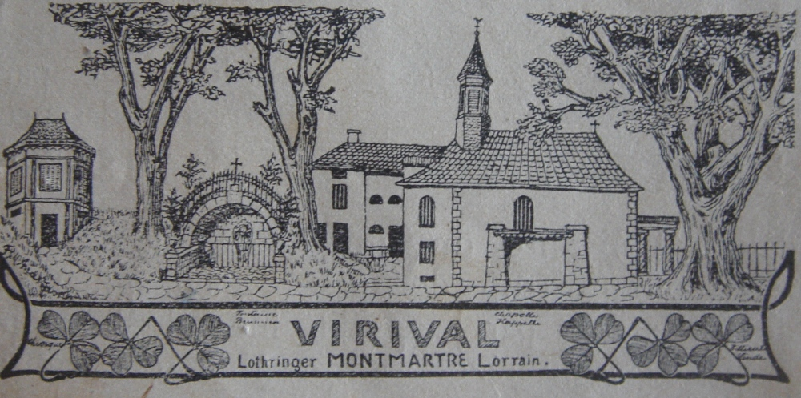

Gloire messine, Le héros chrétien Livier ou Livaire, né à Metz d’une famille noble au début du Ve siècle, fut martyr à Marsal à cause de son opiniâtreté à défendre la ville de Metz et ses compatriotes lors de l'invasion des Huns en 450.
1) Selon la Légende…..
| Panorama situé dans la chapelle Saint Livier | Tableau représentatnt le martyr de Saint Livier (chapelle Saint Livier) |
Chapelle Saint Livier | Intérieur de la chapelle Saint Livier |
|  |
| Chapelle Saint Livier sur le mont Saint Jean En 1623, l’abbé de Salival, Jean de Gombervaux, fit construire la chapelle qui fut restaurée à de nombreuses reprises depuis . Une statue de bois représentant Saint Livier tenant sa tête dans les mains,se trouvait près de la fontaine et est actuellement exposée au sous-sol du musée Georges de La Tour de Vic-sur-Seille. Frère Marc vit en ermite à Saint Livier . Un pèlerinage a lieu chaque année en juillet et les pélerins défilent devant la source. |
2) Datation du martyr de Saint Livier
Il est communément admis la date de 451 .
Deux éléments toutefois concernant l’historique des faits :
- Le Petit cartulaire de Saint Arnould, document du Xème siècle, indique la date de 329 pour cet évènement du martyr de Saint Livier lors d'autres faits de guerre.
Or en 451, les Huns allaient en effet de Metz à Orléans, et non vers Marsal qui est sur la route de Strasbourg….
http://fr.wikipedia.org/wiki/Bataille_des_champs_Catalauniques_(451)
- Dom Calmet lui même dans son introduction à sa « Généalogie de la maison de Gournay », Histoire de Lorraine 1737, parle de « Saint Livier citoyen de Metz, martyrisé par les Huns au troisième siècle ». (201-300).
Dans un contexte de crise au 3ème siècle de l’Empire Romain .
http://fr.wikipedia.org/wiki/Crise_du_troisi%C3%A8me_si%C3%A8cle
Les Huns ne sont arrivés en Europe qu’en 370 à partir des steppes de la Volga, selon les Historiens.
Il est donc impossible de retenir historiquement la date du martyr de Livier en 451, sous l’épiscopat d’Auctor ou Auteur, 13ème évêque de Metz. http://fr.wikipedia.org/wiki/Auctor_de_Metz
3) Origine et Famille de Saint Livier : des sources multiples convergentes.
Livier est le fils de Honstrand, seigneur du pays messin et de Guinarde de Gournay qui appartenait à l'une des plus anciennes familles de Metz.
http://fr.wikipedia.org/wiki/Famille_de_Gournay_(Lorraine)
Né en 295, dans la riche cité de Divodurum ( Metz) , sise au confluent de la Seille et de la Moselle, de parents nobles et aisés.
Livier fut éduqué selon son rang, et dans la tradition de la culture chrétienne.
Comme tous les nobles de la cité, Livier était dés son adolescence un chevalier animé par la foi chrétienne .
Sobre, pieux, dynamique, lettré, gai et courtois, il fréquentait l’oratoire Saint-Etienne. Il jeûnait tous les mercredi et vendredi.
Dom Calmet au XVIIIe siècle dans sa « Généalogie de la maison de Gournay ou Gronaix » incluse dans son Histoire de Lorraine, y indique que c’est une des plus vieilles familles messine:
" La Maison de Gournay est une des plus anciennes de la ville de Metz où elle a rempli les premières dignités militaires et civiles. Dans le temps que cet Etat était régi par ses propres Lois, ou gouverné sous l’autorité des Empereurs.
Elle a eu la meilleure part dans l’Administration de la Justice, et dans la conduite des Armées, deux fonctions qui élevaient à la dignité de Maitre-échevin de Metz….Au service de Princes étrangers, ….le lustre de leurs origines…Partout on y voit la trace d’un grand nom, soutenu par de grandes alliances, et accompagné de brillantes actions.
La dignité de Maître- Echevin ..était
attachée héréditairement à la Maison de Gournay " .
Il rappelle que Le Roman de Saint-Livier parle de « Gunard, un des Gournais », général des troupes des messins et père de Guigarde, qui épouse Hontran, père de saint Livier.
Il mentionne ensuite « Vuldus de Gournay partit de Metz vers l’an 960 pour aller trouver Guillaume le Conquérant, qu’il servit avec tant de courage et de fidélité qu’il en reçut pour récompense la ville de Gournay en Normandie, avec dix-huit villages pour lui et Hugues de Gournay, son fils qui épousa Basilie de Flatelly […] ». Cette branche normande reviendrait sur Metz trois générations plus tard avec « Thiedric », fils d’Hugues de Gournay et de « la sœur de Rodolphe de Péronne, comte de Vermandois, princesse de sang Royal, fille de Hugues de France, dit le Grand, comte de Vermandois, frere du roi Philippe I » (Béatrice de Vermandois). Thiedric est dit « échevin noble » d’Étienne de Bar, évêque de Metz, et a pour fils Nicolas de Gournay dit le Vieux, maître-échevin de Metz en 1230[
Dom Tabouillot de préciser en citant le Sire de Rambervillers : « Entre les gentilshommes que la vieille histoire appelle haute bourgeoisie de la cité de Metz, fut un Seigneur Guinard de Gournay, personnage relevé en probité, prudence, qui fut le père de Guinarde de Gournay, dame illustrée par de grandes vertus, et singulièrement de piété et de sagesse.
Elle fut mariée à un seigneur de semblable lustre de maison patricienne duquel le nom était Hunstrand.
Du
mariage de ces deux illustres personnages naquit Livier. »
MSS, bibliothèque de Metz, Dom Tabouillot .
Les Chartes de Saint Arnould nous apprennent le même détail : « Livier issu de noble race et citoyen de Metz. »
Les anciens manuscrits disent de même : « en cette bataille fut un saint nommé Livier, pieux chevalier et procréé de clair et noble sang de parents nés du territoire de Metz.
Enfin Bossuet dans une oraison funèbre dédiée à Messire Henri de Gornay, comte de Marcheville, ambassadeur de France à Istamboul de 1631 à 1639, a fait construire le deuxième palais de France à Istamboul sur ses deniers propres : « Saint Livier est la gloire de la Maison de Gournay…issu de parents illustres, claris parentibus, ce qui est une conviction manifeste qu’il faut reprendre la grandeur de cette maison d’une origine plus haute » http://www.abbaye-saint-benoit.ch/Bibliotheque/bossuet/volume012/033.htm
4) Un peu d'Histoire
a) Les premiers Evêques de Metz.
Depuis que l’évêque Clément, 1er évêque de Metz, vers 250, terrassa le terrible Graoully, affreux dragon ou serpent, qui terrorisait la région, et séjournait dans l’amphithéatre de Divodurum où s’était retiré Saint Clément, de nombreuses familles s’étaient converties au christianisme.
Avant le VIe siècle, la chronologie épiscopale reste très incertaine et parmi les saints évêques des premiers âges de l’église de Metz, nombreux sont ceux sur lesquels on ne dispose d’aucune information historique[1].
Une tradition ancienne, qu’on peut retrouver dans la Gesta episcoporum Mettensium écrite par Paul Diacre vers 783, fait remonter la fondation du diocèse de Metz aux premiers apôtres :
Saint Clément aurait été un disciple de saint Pierre, envoyé de Rome avec le prêtre Céleste et le diacre Félix pour évangéliser la région vers l’an 95.
Patient, le quatrième évêque, aurait lui été un parent de l’apôtre Jean.
Les légendes qui entourent les premiers évêques de Metz ont été construite entre les Xe et XIVe siècles par les abbayes Saint-Arnould et Saint-Clément, ainsi que par l’abbaye de Gorze et l’évêché.
Selon la tradition médiévale, les premiers évêques viennent presque tous de Grèce.
vers 280-300 : saint Clément de Metz, le 1er évêque de la ville
saint Céleste de Metz, 2e évêque
saint Félix Ier, 3e évêque
saint Patient de Metz, 4e évêque
vers 346: saint Victor Ier, 5e évêque.
On trouve ses traces dans les actes (probablement faux[6]) du pseudo-concile de Cologne de 346[7]. Il participa peut être aussi au concile de Sardique en 344[
Constantin ( 272-337) 1er,
le Grand, converti en 312, n’en a pas moins favorisé les
chrétiens, déjà nombreux dans l’Empire, et fait du christianisme
une religio
licita (édit de tolérance de Milan, 313).
Désormais favorisés, les chrétiens deviennent majoritaires car les
conversions se multiplient. On peut bientôt parler d’un « Empire
romain chrétien » dans la mesure où les postes importants
sont désormais réservés aux chrétiens.
Il faut se rappeler que l’Eglise, convoquée par Constantin en 314 au concile d’Arles, accepta le concours du glaive, car consciente de sa puissance à venir, clamait son besoin de soldats pour la défense contre les envahisseurs barbares.
Ainsi le concile d’Arles excommunie ceux qui persistent dans leur refus de porter les armes en temps de paix.
Qu’en était-il en temps de guerre ? Il semble qu’une partie au moins des chrétiens ont prolongé l’attitude ancienne liée au refus de tuer ; mais peu à peu s’impose une nouvelle conception, défendue par saint Augustin: la guerre, dans certaines conditions, peut être considérée comme « juste » ; un moindre mal, en somme. Les chrétiens « ordinaires » (les fidèles, les laïcs) sont donc tenus d’y participer…comme Livier.
c) les seigneurs de Gournay au XVII ème siècle
Charles-Chrétien de Gournay est évêque de Toul de 1636 à 1637. Il est le fils[1] de Regnaut de Gournay[2] (mort en 1613), seigneur de Villers, bailly de Nancy, chef du Conseil d'État de Lorraine et d’Agnès d’Esche.
Ses frères ainés, sont Charles de Gournay, seigneur de Villers, sénéchal de Lorraine et Henri de Gournay, bailly de Saint-Mihiel, « gouverneur » (le masculin de gouvernante) du duc Charles IV, premier gentilhomme de la chambre de Gaston, duc d’Orléans, ambassadeur de France à Constantinople.
Charles de Vaudémont, né à Nancy le 5 avril 1604, mort à Bernkastel le 18 septembre 1675, fut duc de Lorraine et duc de Bar en droit de 1625 à 1675 et en fait de 1625 à 1634, en 1641 et de 1659 à 1670, sous le nom de Charles IV. Il était fils de François II de Lorraine, comte de Vaudémont puis duc de Lorraine et de Bar en 1625 et de Christine de Salm.
« Le
sang qu'a répandu ce généreux martyr,... vous donne plus de gloire
que celui que vous avez reçu de tant d'illustres ancêtres : « Il
est de la race des saints : » Filii
sanctorum est. L'histoire remarque
qu'il était claris parentibus...
Mais tous ces titres glorieux ne lui ont jamais donné de
l'orgueil. »
« Saint Livier, environ l'an 400, selon
la supputation la plus exacte, est la gloire de la maison de Gornay.
Le sang qu'a répandu ce généreux martyr, l'honneur de la ville de
Metz, pour la cause de Jésus-Christ, vous donne plus de gloire que
celui que vous avez reçu de tant d'illustres ancêtres : « Nous
sommes la race des saints : » Filii sanctorum sumus (1). L'histoire
remarque qu'il était claris
parentibus : ce qui est une
conviction manifeste qu'il faut reprendre la grandeur de cette Maison
d'une origine plus haute.
http://www.abbaye-saint-benoit.ch/Bibliotheque/bossuet/index.htm
« Il est mort trop tôt : non; car la mort ne vient jamais trop soudainement quand on s'y prépare par la bonne vie. » dernière phrase de l’oraison funèbre à Henri de Gornay , dont le père Henri de Gournay se rattache à Livier à qui cette ultime phrase pourrait être sienne….
4) Disparition de la relique de saint Livier depuis décembre 2016